MERIDIUS / SUCCUBUS (GERMAN SHEPHERD HYBRID) / 3D RIG / 24 OCT 2026
Succubus 3D rig
A succubus and German shepherd hybrid: horns, drooping deer ears, bat wings, a bushy tail, paws, and a coiled razor whip in her left hand. She was drawn in Higgsfield, modelled in Tripo as four separate parts, reworked and rigged in Blender, and exported as one FBX that plays in the Godot 3D sandbox. Eight clips from E:\Animations play below from the game's battle camera, in all four facings. Her tail, wings and loincloth move on their own on top of the Mixamo motion, and in the attack a bladed lash plays out of the whip's collar.
Combat skills
Combat animation and approved spell concept; gameplay kit pending · 2026-10-24
The Succubus is currently a 3D sandbox character, with no unit entry or combat ability kit in the Godot gameplay data.
| Skill | Availability | Effect |
|---|---|---|
| Whip attack | Existing animation · Sandbox only | A left-handed bladed lash extends and cracks like a whip twice, an overhand strike and a rising underhand one, both forward at the tile ahead, then recoils and falls. Damage, gameplay reach, costs and cooldown are not defined; the two animated strikes do not establish two gameplay hits. |
| Sovereign Kiss | Approved visual direction · Gameplay pending | A blown kiss becomes a large heart of pink fog that passes through opponents, enthralls eligible targets and dissolves beyond the formation. Cast with the free right hand while the left keeps the whip lowered. Target count, duration, resistance, range, cost and cooldown remain undecided. |
3D animation status. The whip Attack clip is available in the pose viewer. Sovereign Kiss has an approved visual direction and a Blender handoff; its animation and gameplay implementation remain pending.
Sovereign Kiss schematic and icon · Spell animation handoff · Combat skill source snapshot
Animations to fix
Step to the frame that is wrong in the pose viewer below, press Copy frame reference, and send it with a note. Each fix is recorded here with what changed.
Clip | Source | Length | Status | Notes |
|---|---|---|---|---|
| Idle | Idle standing - Succubus-German Shepherd | 16.6 s loop | New · to review | Her standing idle, added 24 Oct. Her hand and the coiled whip sank 6–7 cm into her fur hips: the whip arm is now held 15–24° out from her side and the whip rolled outward in her fist. Wings sway nine times per loop. |
| Idle flourish | Idle - Succubus-German Shepherd | 7.8 s, one-off | Fixed · to review | The bending idle, now played from the idle now and then: each succubus waits her own random 9–22 s, so a squad never moves in step. Eased in from and back to the idle's first pose. Frame 220: the whip arm is turned out from her side while her hands rest on her knees (up to 42° in this clip), so it no longer cuts into her legs. Frame 166: the whip rolled in her fist so the coil lies behind her head instead of through it (it still touches her hair). |
| Walk | Walking - Succubus-German Shepherd | 1.17 s loop, 1.0 m/s | To review | Wings folded. On the back swing the whip's pommel went into her hip fur: the arm now turns out up to 11° there. The loop's last frame differs from its first by 1.7 cm at most. |
| Start walking | Start Walking - Succubus-German Shepherd | 1.87 s | To review | Keeps its travel (1.6 m). Tail and wing sway build up. Whip arm 6–15° out. |
| Stop walking | Stop Walking - Succubus-German Shepherd | 1.53 s | To review | Keeps its travel (1.4 m). The sway dies down. Whip arm 6–15° out. |
| Attack | Attack - Succubus-German Shepherd | 3.5 s | Changed · to review | Extending whip, revised 24 Oct. At the top of her wind-up (frames 17–22) the coil rolls up into the collar while a 2 m bladed lash plays out of it, laid back over her shoulder. It then cracks twice like a whip (The whip crack): an overhand strike, straight at the tile ahead at frame 27 (0.87 s), and a rising underhand strike at frame 52 (1.70 s, formerly a backhand at frame 55 that cracked behind her). After each crack the lash recoils and falls in front of her; after the second, her arm stops at the target and sinks (edited: the clip pulled it back over her shoulder). It is reeled in at frames 62–70 as the coil returns. The wings flare round frame 42. |
| Hit | Hit - Succubus-German Shepherd | 3.43 s | To review | Eased in from and out to the idle; turned 38° to face her facing. Starts and ends with the idle's arm and whip. |
| Death | Death - Succubus-German Shepherd | 3.5 s, still at 2.87 s | To review | Falls on her back 1.3 m to her right; hips lifted up to 0.23 m to keep her above the ground. The wings open and lie beside her; their membranes dip up to 2.6 cm into the ground near the end. |
Pose viewer
Pick a clip and a facing, pause, then step frame by frame to the pose you want to comment on. Keys: Space play / pause, ← → one frame, Shift + ← → five frames, Home and End first and last frame.
From the user's three references, Nano Banana Pro on Higgsfield drew her in a T-pose at 4K. The drooping-ear version was chosen; wings, tail and whip were drawn on their own. Higgsfield's filter refused every edit without the wings (five tries, none charged), so the user cut the body out by hand.
Smart Mesh in quads, one variant each: body (6,162 faces), wings, tail and whip, each textured at 4096 px. 400 + 80 credits.
A spike Tripo invented behind her hips deleted. Hips 15 % wider and buttocks 10 % fuller; legs 15 % longer, then scaled back to 1.95 m with the horns.
Black paw pads on both soles, one behind each claw where the user marked them, turned with her feet. 288 fur tufts on her hips and thighs, with a fringe over the stocking tops.
62 bones with Mixamo names, fitted to her: a six-bone tail at her lower back, four bones per wing on the shoulder blades, three on the loincloth, the whip's handle and coil on their own bones in her left fist, and a 16-bone lash.
Each limb is first turned onto Mixamo's rest pose, so her wide stance and turned-out paws do not carry into her stride.
Wings folded while walking and half spread at idle, after the user's reference video. The tail sways once per stride. The loincloth rides over whichever thigh is furthest forward.
One 9.1 MB FBX with all clips, checked by re-import, plays in footman3d_sandbox.tscn next to the 3D footman, his game sprite and an oak prop.
From concept to Tripo
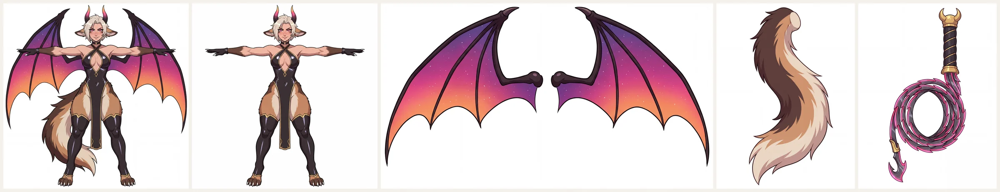
The model in Blender
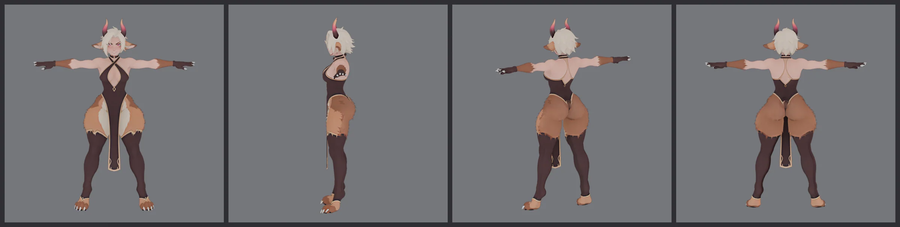
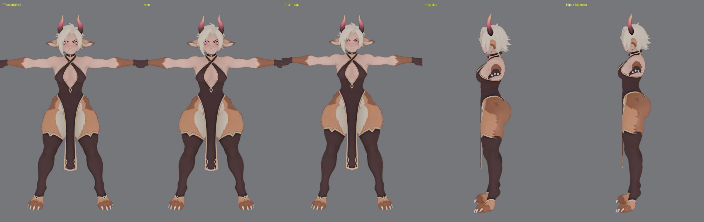
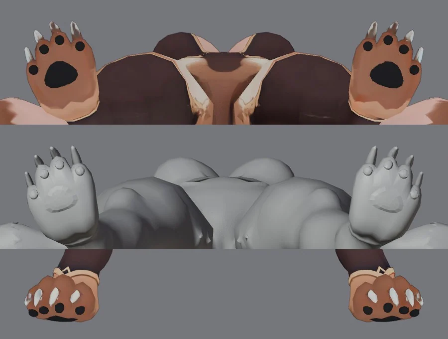
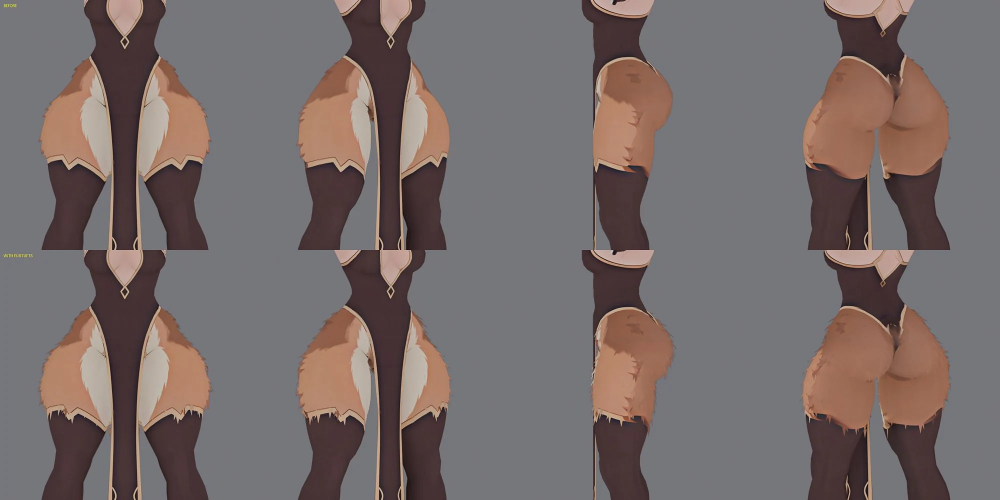
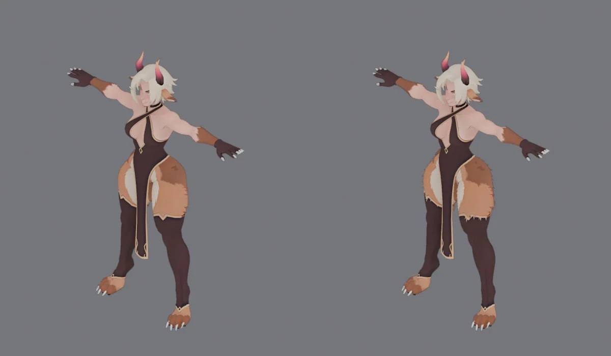
Rig
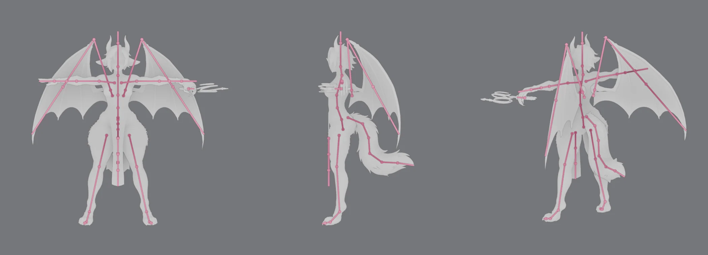
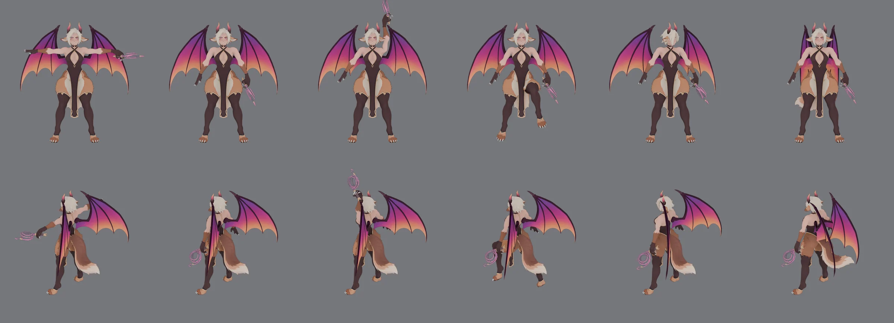
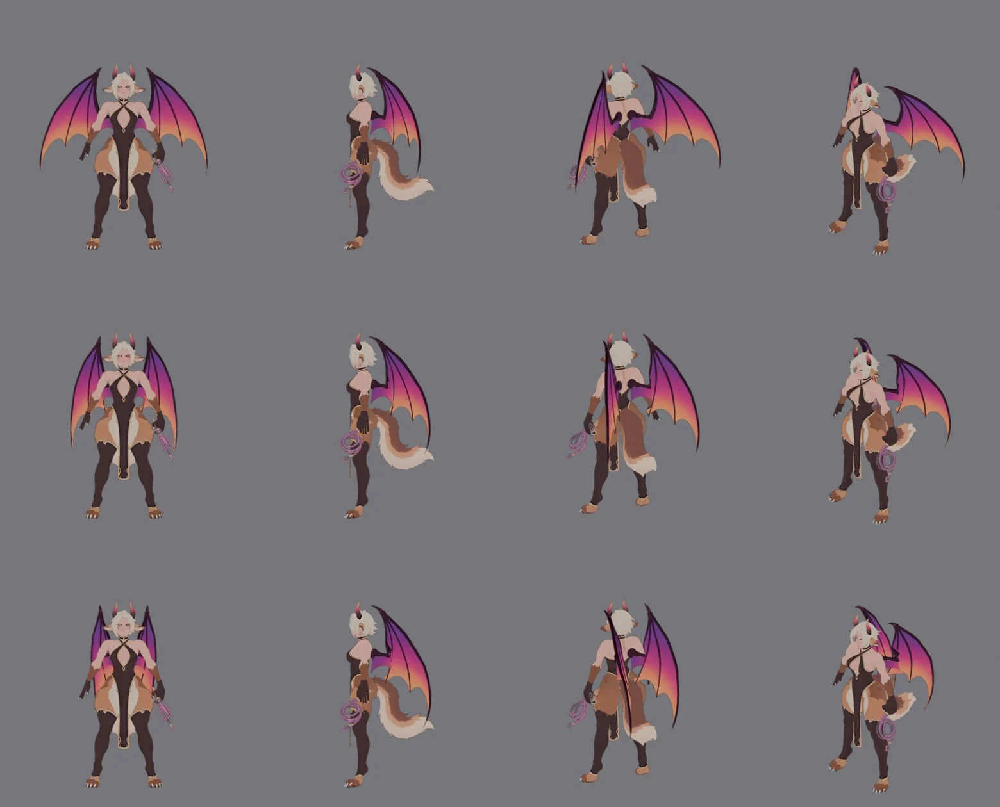
Loincloth
Skinned with the legs, the front panel was dragged towards whichever leg moved. It now hangs on its own three bones from her hips and swings forward with the thigh that is furthest forward, never sideways, so it keeps covering her. Left: the old panel; right: the one in use.
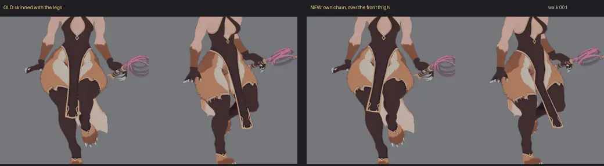
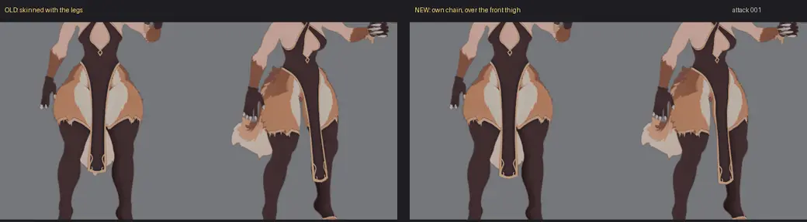
The whip
Tripo modelled the whip coiled, so the rig splits it: the handle stays in her fist, the coil sits on a bone of its own at the collar. For the attack a lash was built in Blender from the concept (no paid generation): a tapering core, scale-like blades in pairs pointing back to the handle, a gold ferrule and a hooked tip, coloured from the coil's own texture. It is 2 m long on 16 bones, twice as thick as a real lash so it still reads at the game's zoom.
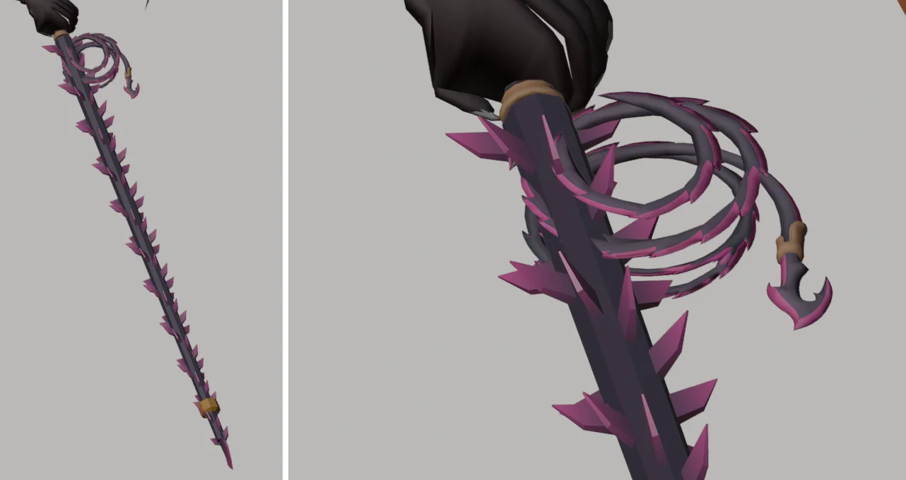
In the attack the coil rolls up as the lash plays out, the lash cracks twice as a whip (below), and it is reeled back in. Step through it in the pose viewer: clip Attack, frames 17–72.
Wherever her whip arm or the whip cut into her, the arm is now turned out from her chest and the whip rolled in her fist. Both turns are chosen over the whole clip at once and smoothed, so they ease in and out. Clips that start or end in the idle pose take the idle's own turn there.
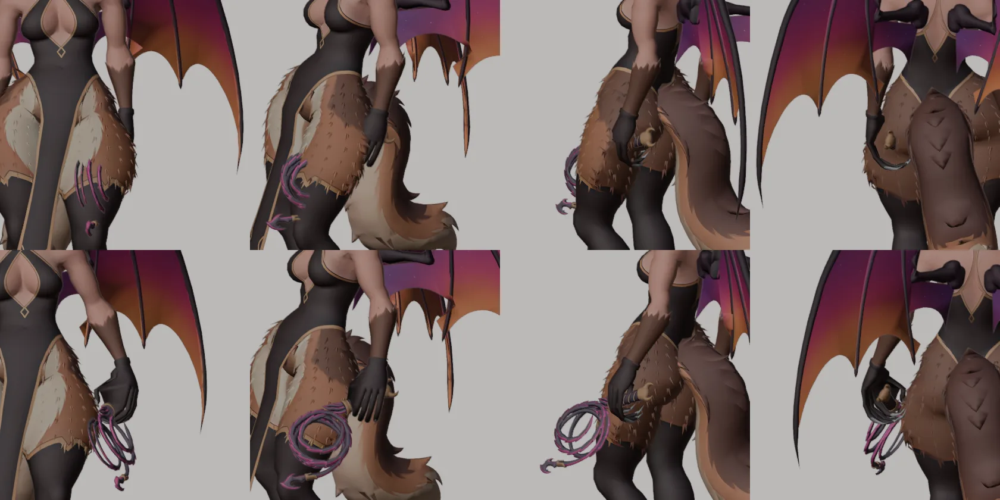
The whip crack
Result. The lash now moves like the whip in the user's reference. It loads behind her, a loop rolls out to the tip, and the lash snaps straight at the crack, then recoils, droops and lies on the ground. Both cracks aim at the tile ahead: frame 27 (0.87 s) and frame 52 (1.70 s), and after each the lash falls in front of her. Before, it swung as a stiff rope, and the second strike cracked behind her. Nothing was generated and no credits were spent.
The reference (YouTube) is a 2.5 s line animation at 24 fps of an arm cracking a tapered whip. These observations are from all 59 frames. The download has no audio.
- 0.21–0.33 s: the arm lifts; the lash trails below the hand.
- 0.38–0.58 s: wind-up; the lash is dragged up and back over.
- 0.63–0.75 s: forward stroke; the lash lies in a long arc behind and above the hand (loaded).
- 0.79–0.83 s: the arm stops at the target. A narrow loop forms: the part by the hand runs straight along the strike line, turns, and the rest folds back. The loop rolls out to the tip.
- 0.88–0.92 s: the lash snaps straight along the arm's line: the crack.
- 0.96–1.00 s: it recoils in an S-wave.
- 1.04–1.17 s: it droops, and hangs straight down by about 1.3 s.
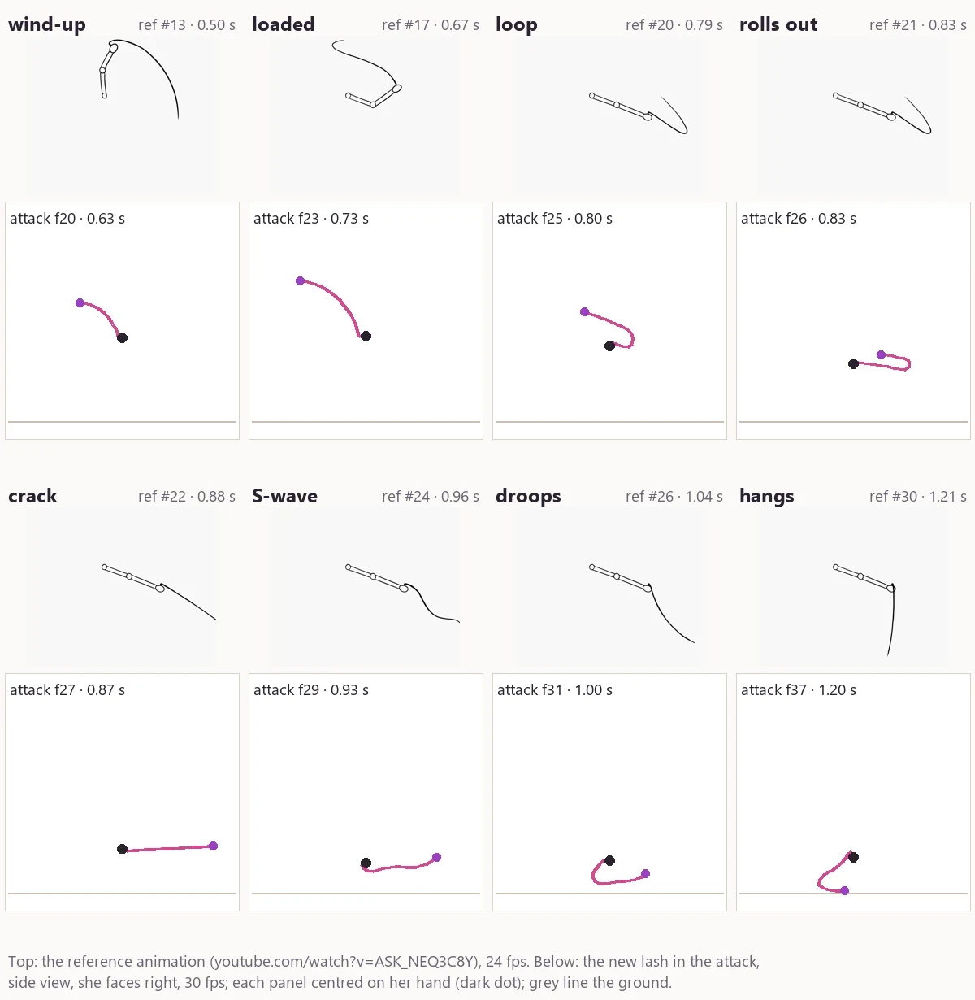
The lash is still a simulated tapered rope (whip_motion.py), now steered through a whip's phases:
- Loaded. As it plays out, it is laid back over her shoulder (frames 15–24).
- Loop and crack. For each strike, the lash straightens out of the handle towards the crack point, handle first and faster and faster. The rest rolls over in a loop that runs out to the tip, so the lash is straight at the crack. Strike 1 cracks 2.6 m ahead, 1.0 m up. Strike 2 cracks 2.5 m ahead, 1.1 m up. The tile's centre is 2.7 m ahead.
- Recoil and fall. An S-wave runs out to the tip. The lash then falls three times as fast as gravity, which matches the reference's quick droop, and hangs from her hand onto the ground. Drag on its motion relative to her hand stops the old flailing. Between strikes the tip now peaks at 19 m/s, where the old rope reached 40–60 m/s and cracked a second time.
- Strike 2 starts from her hip: the lash lying behind her is dragged up into the loop. Follow-through, revised 24 Oct. In the clip, her chest kept turning about 90° to her left after this crack and pulled her hand back over her shoulder, so the lash fell behind her. Now her chest's turn eases to a stop at about 37°, and her arm stops at the target and then sinks forward to waist height (frames 50–72, IK on the upper arm and forearm, the whip along her forearm). It then eases back into the clip's ending (by frame 92). The lash droops and hangs from her hand in front of her, tip on the ground 0.75 m ahead, as in the reference, until it is reeled in at frames 62–70. The crack is also cleaner: the tip reaches 42 m/s, up from 28, and stays under 8 m/s afterwards. Her legs, hips, wings and tail are unchanged.
In Godot
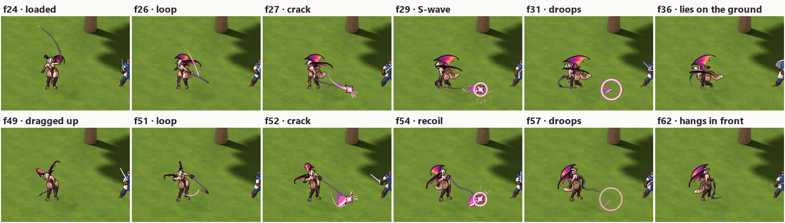
Before: the rope lash, and strike 2 falling behind her (same captures)
Before the follow-through fix: the whip as above, but after strike 2 her hand swings back over her shoulder and the lash falls behind her.
The rope lash, before the whip revision:
The sandbox's slash effects (whip_fx.gd, a look test, not the game's effects) needed no change, because they sample the lash path from the clip. Each crack gets a star, a shock ring and streaks at the tip. The slash crescent is now a short flare behind the crack, since the tip snaps along the line instead of sweeping an arc. No ground slap fires, because both cracks are in the air.
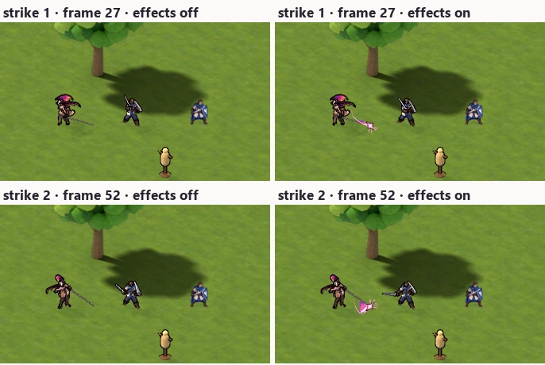
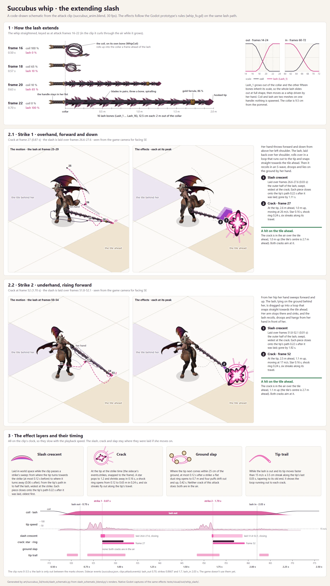
slash_schematic.py: the lash extending, both strikes from the game camera, and the effect timing.In the Godot sandbox
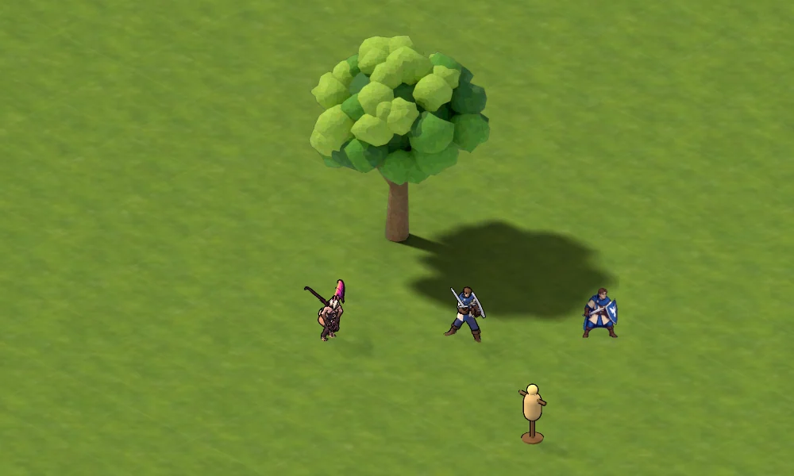
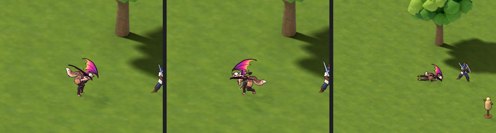
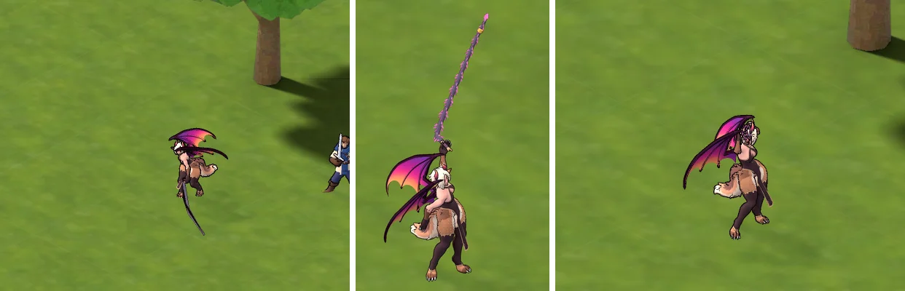
Two things only showed in Godot. The lash's faces were wound inside out, which Blender's viewport hides, so Godot drew it black; its normals are now recalculated when it is built. Godot's automatic levels of detail also dropped its blades, ferrule and hook, leaving a bare rod, so the lash is kept at full detail and gets a thinner outline.
A 2D prop is drawn in two parts: upright above its foot point, so the depth buffer puts her in front of or behind it, and flat on the ground below, where its painted shadow lies. The prop renders also carry a faint black haze over their whole frame; the sandbox takes it off when it loads them.
Motion reference
Measured from the user's reference videos (wings, tail, whip).
Part | Reference | Used |
|---|---|---|
| Wings, walking | Folded; a bob each step (about 2.5° at the root, lowest at foot contact); a sideways swing once per stride, opposite to the hips | The same |
| Wings, idle | Half spread; a sway every 1.75 s | Every 1.85 s (nine per idle loop); in the flourish every 1.95 s (four) |
| Tail | An animatronic tail with nobody walking: a wag every 1.0 s, about ±30° at the tip, no wave down the tail, hanging 40–45° from vertical | Once per stride (1.2 s); the tip about ±22°; each bone 22° behind the one before, so it flows; hanging 45° |
| Whip | A line animation of one crack: loaded behind the hand, a loop rolls out to the tip, straight at the crack (0.88 s), an S-wave recoil, then it droops and hangs by 1.3 s | The same phases, twice; after the second crack her arm stops at the target and sinks (edited; the clip pulled it back), and the lash falls at three times gravity and hangs in front of her |
Notes
- Not done. Nothing is wired into the game: the FBX and the slash effects play only in the prototype sandbox. The attack's crack times are in the sidecar (
events.strikes: 0.8667 and 1.7 s) but nothing uses them yet. A few frames still touch: in the flourish the coil grazes her hair (frame 166) and rests against her thighs while she bends (around frame 220), and on two walk frames the pommel brushes her hip fur. - FBX check. Re-imported from a copied folder into an empty scene: 59 deforming bones, six skinned meshes, eight clips at their lengths, and bone and mesh positions identical to the source in every clip.
- Costs. Higgsfield: 20 credits (five 4K images kept; five refused by the filter, not charged). Tripo: 480 credits (four Smart Mesh models at 100, four textures at 20).
- Files.
projects/meridius/source/godot/art/succubus_3d/:succubus_base.blend,succubus_rig.blend,succubus_anim.blend, the scripts intools/(build, rig, retarget, secondary motion, whip motion, export, verify, renders) andREADME.mdwith the rebuild steps. The FBX and its sidecar:prototypes/footman_anim/art3d/succubus.fbxand.json. The Tripo exports are inreferences/characters/Succubus TRIPO/; images, job IDs and costs inreferences/characters/succubus_idle/.